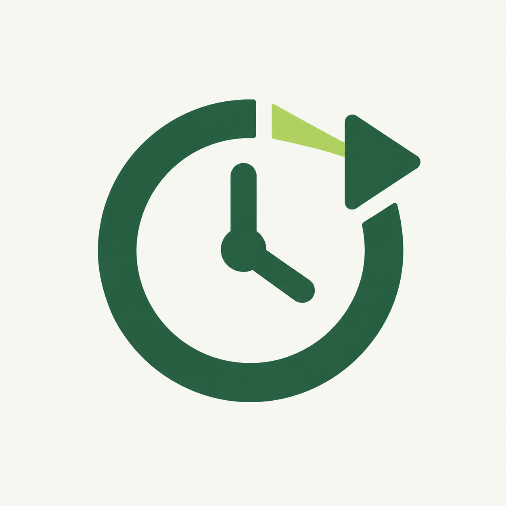
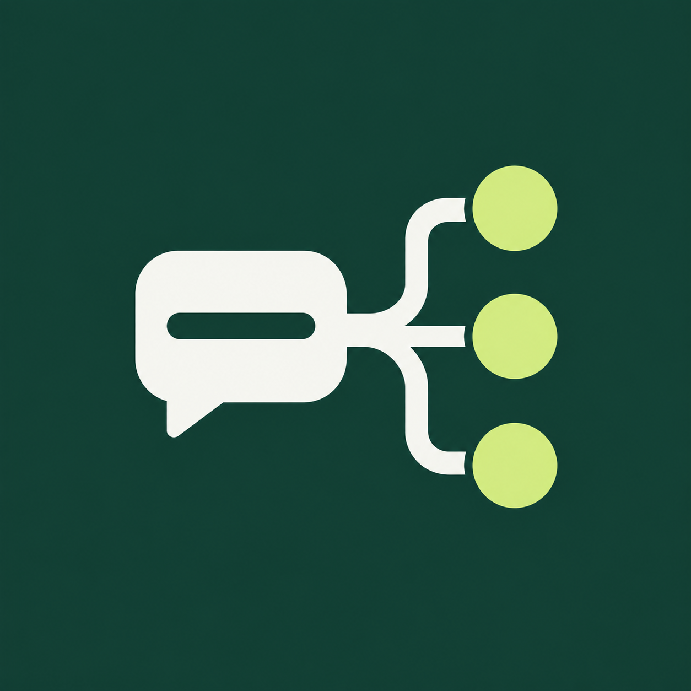

01 · Объявления
Прямой образ публикации: рассказать о товаре или услуге.
64 и 32 px
Скачать PNGКаждый знак подходит для аватара бота и канала. Ниже — оригинал, круглая обрезка и проверка небольшого размера.
Прямой образ публикации: рассказать о товаре или услуге.

Главная возможность бота: отправлять в выбранное время.

Один готовый текст отправляется в несколько выбранных групп.
Исходные файлы: 1254 × 1254 PNG. Новые варианты созданы через ImageGen. Текущий логотип сайта пока сохранён.